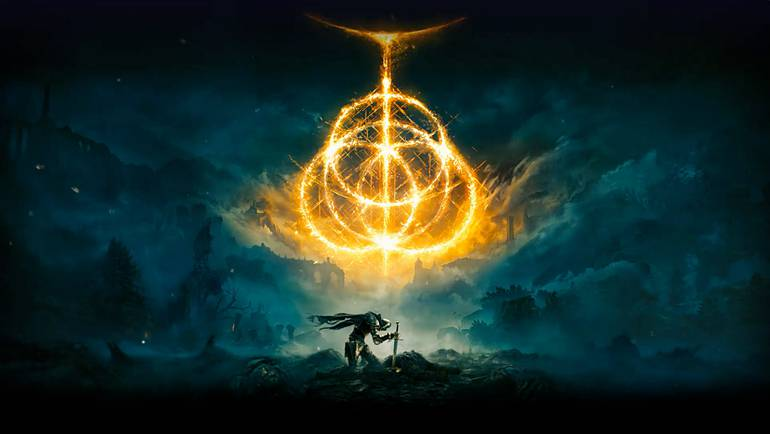
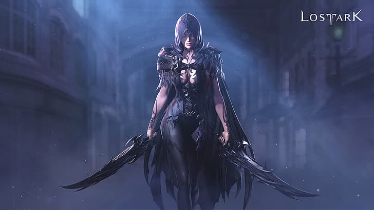
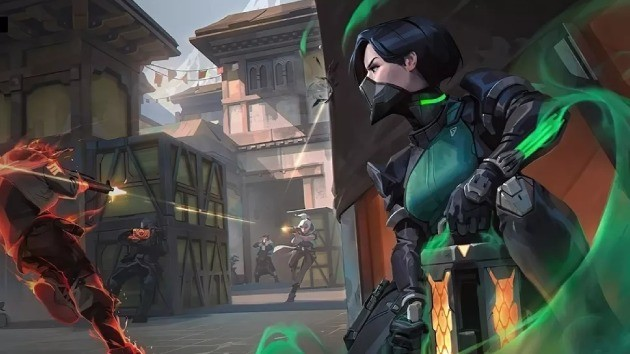

Alguns dos jogos mais esperados de PS5, Xbox Series e Nintendo Switch serão lançados em 2022. Elden Ring, a continuação de The Legend of Zelda: Breath of the Wild, Horizon Forbidden West; este promete ser um ano memorável, como costuma ser o caso nos ciclos de segundo ano dos consoles. Nesta matéria, o The Enemy reuniu todos os lançamentos mais relevantes de 2022. Vamos manter a página constantemente atualizada, então, se você quer ficar por dentro do que chegará aos consoles e computadores, basta voltar aqui sempre que puder. Acesse também


Um dos MMORPG mais aguardados do ano, Lost Ark teve seu lançamento mundial em 2022. Rapidamente se tornou um dos jogos mais jogados do Steam e existe um motivo por atrás de todo esse sucesso: com uma mecânica parecida com Diablo e Path of Exile, a jogabilidade é viciante e convidativa a experimentar as diferentes classes e modos de jogo. Seja um Guerreiro, Atirador, Mago ou outro entre várias outras classes e subclasses disponíveis, cada um possui suas próprias qualidades e podem ser trabalhadas e evoluídas. Aventure-se em um universo novo e compartilhe experiências com jogadores de todo o mundo. Em Lost Ark, você pode jogar no Modo História, explorar masmorras ou travar batalhas PvP com aliados e adversários de todo o globo.

é um dos mais populares FPS competitivos da atualidade. Foi desenvolvido pela RIOT Games, a mesma produtora do League of Legends. O jogo funciona em partidas disputadas entre duas equipes de 5 contra 5 em rounds, onde uma equipe ataca e outra defende. Plante ou tente desarmar a bomba Spike, extermine todos os adversários e compre armas e escudos durante o pré-round com os créditos que ganhar entre as partidas. Com muita estratégia, Valorant oferece o equilíbrio perfeito para quem gosta de um bom jogo de tiro e estratégia multijogador. Durante as rodadas, você pode assumir a posição do time de defesa e do time de ataque, cada um com objetivos e missões diferentes.